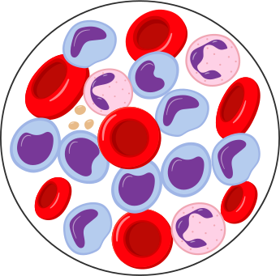

Sickle cell disease is a genetic blood disease which affects the whole life of affected patient. It is more common in the tribal population of India, but occurs in non tribals too. It not only causes anemia but also pain crises, reduced growth, and affects many organs like lungs, heart, kidney, eyes, bones and the brain. India has the largest density of tribal population, globally. As per Census 2011, India has an 8.6% tribal population which is 67.8 million across the Indian states. The MoHFW tribal health expert committee report has listed sickle cell disease as one of the 10 special problems in tribal heath that affect the tribal people disproportionately, thus making this an important intervention. Ministry of health under NHM initiated the work on hemoglobinopathies (Thalassemia & Sickle Cell Disease) in 2016 wherein comprehensive guidelines on prevention and management of heamoglobinopathies were released and provision of funds towards screening and management of Sickle cell disease were made. Thereafter, as per the State’s proposals, support is continuously being provided. However, the pandemic reduced the efforts towards prevention through screening and IEC activities. Now, it is felt that a separate scheme/Mission to detect, management, prevention and awareness needs to be initiated.
Mission : To improve care of all Sickle Cell Disease patients for their better future and to lower the prevalence of the disease through multi-faced coordinated approach towards screening and awareness strategies
Vision : Eliminate sickle cell disease as a public health problem in India before 2047 there is need for increasing the awareness about the disease in the community, implementation of mass screening activities for early identification, building a strong network of diagnosis and linkages, implementing robust monitoring system, strengthening the existing primary health care mechanism to incorporate SCD related strategies, capacity building of primary, secondary and tertiary health care teams and building cost-effective intensive interventions at higher care facilities
- Provision of affordable and accessible care to all SCD patients
- To ensure quality of care for SCD patients
- To reduce the prevalence of SCD
These objectives would be attained through strategies spanning awareness generation, strengthening of screening and testing facilities, strengthening of laboratory services for diagnosis, facilitation of management & treatment, establishing linkages across level of care, inter sectoral convergence towards holistic approach and linkages with social security schemes/benefit packages. Strategy: The strategy emphasizes on THREE pillars:
- Health promotion- Awareness generation & pre-marital genetic counselling
- Prevention: Universal screening and early detection
- Holistic Management & continuum of care-
- Management of persons with sickle cell disease at primary, secondary and tertiary health care levels treatment facilities at tertiary health care facilities
- Patient support system
- Community adoption
Beneficiaries: The program shall be carried out in a mission mode covering the entire population from zero to 18 years of age and shall incrementally include the entire population up to 40 years as a part of National Health Mission and shall focus on universal population-based screening, prevention, and management of sickle cell anemia in all tribal and other high prevalent areas States/UTs of India. While in its initial stage, the mission would prioritize its intervention in high prevalence and tribal states/UT, the plan would subsequently expand to include all states/UTs in a phase-wise manner with an incremental approach. The mission aims to cover 7 crore people with screening, counselling for prevention and care for people with SCD in three and half years.
Initially, the focus shall be on 17 states with higher prevalence of SCD viz., Gujarat, Maharashtra, Rajasthan, Madhya Pradesh, Jharkhand, Chhattisgarh, West Bengal, Odisha, Tamil Nadu, Telangana, Andhra Pradesh, Karnataka, Assam, Uttar Pradesh, Kerala, Bihar and Uttarakhand. The programme would be in integration with existing mechanism and strategies under NHM to ensure utilization of existing resources and also minimizing the duplication of efforts. For example, established platform of RBSK and Pradhan Mantri Surakshit Matritva Abhiyan (PMSMA) would be leveraged to achieve the targets for the Sickle Cell mission.